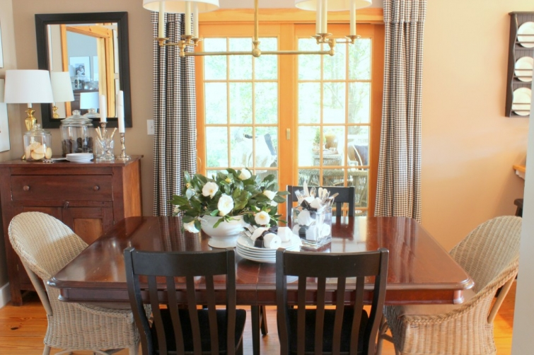

.png)
.PNG)
.PNG)
.PNG)
.PNG)
.PNG)
.JPG)
.JPG)
.PNG)
.PNG)


I really have a fondness for red, but after the overdose of it during the Christmas holidays, I like a clean slate in January. So some of the red is put away for a few weeks until it reappears for February’s day of love. The black and white seems fresh to me after all the holiday decorations.

The dining room table is set with my plain white dishes again. (Farewell Christmas china….) Plain white cloth napkins are tied with black grosgrain ribbon, and the centerpiece is camellias (cut from the yard) loosely arranged in a white soup tureen. Such a fresh contrast to the gingerbread houses and the patterned red napkins of just a month ago.

Oreos and sugar cookies fill the cookie jars on the buffet, and dessert plates and napkins get a fair share of black and white here, too.

Black and white bound cookbooks take the place of the red ones in the cabinet in there. No dab of red is left. (Don’t get me wrong. I do love Christmas. I just need a break from some of the red for a little while.)

Another place where I’ve used black and white is the children’s bathroom. I don’t think I have shown you that room yet. Have I?

The chalkboard is the ultimate place for black and white. (Ignore the ghost letters from Christmas behind the words.)

The master bath has a touch of the color scheme in its simple styling.

All the red has also been removed from the foyer with some black and white taking its place.


And of course you have already seen all the black and white in the playroom…

and in the boys’ room.

I’m not going to bore you with the black and white check kitchen curtains since you have seen them enough already. 🙂 But I will show you the clothing I have added to my wardrobe in the last couple of weeks.
Yep, I love black and white. So do you think there is enough black and white around here?

Don’t worry. I haven’t abandoned all the other colors.
I also purchased these last week…
Red will be making its comeback in about a week with the arrival of February. Until then I will enjoy the classic look of the black and white around here.
Hope you enjoyed it, too.


.PNG)
It looks fantastic! I love all the touches you have. But then, I just love looking at your house no matter what is in it!! 🙂 I love how you have different but related paneling in each room. It just works so well!!
I did have one question — you have this great feature in your feed where the images are smaller. Is that a plugin that does that? It’s very cool. A great compromise over truncating a feed.
~Angela~
———————————————————————–
hmmm..Angela I am clueless on that. It must be some kind of setting that I don’t know about…not sure. Tech things are like a foreign language to me!
Aunt Kelly, I love the black and white! I’m so used to seeing at least a splash of red in the house, but I really like what you’ve done without it. Especially the oreos and the “Not all who wander are lost” quote! 🙂 However, I cannot wait to see the house for Valentine’s Day. Hope all is well.
Sarah
I just wanted to know were you got your gingham curtains? I honestly have been looking everywhere but can’t seem to find them just like yours.
————————————————————————
Kelly, check my reply to Monika’s right before your comment. I just put it in there.
Finally seeing the light … most boxes are unpacked. The house is coming together, I thought, until I read your ‘black & white’ post. How wonderful, how inspirational, how classy. We painted the brown built-in book cases to the left and right of the fireplace in the living room white and now I have a very strong urge to copy some of your ideas. As a matter of fact … I will probably ‘steal’ several of your ideas. Your home is absolutely gorgeous!! Can you tell me where you bought the black and white checkered curtains? So much looking forward to your posts. Have a happy 2013, Kelly.
———————————————————————–
Monika, glad you are finally getting most of the unpacking done. What a job! The drapes in the kitchen and dining room were custom made by me from a Roth Tompkins fabric. The black and white check drapes in the playroom came from Country Curtains. They are the Cabin Check, but they do not come lined. I lined them with sheets when they arrived here. Hope that helps!
Oh Kelly, I LOVE black and white! That’s one of my goals for the next house…have a bit of black and white in every room!!! It’s just so fresh, classic, and yet has this hint of modern edge. I love how you’ve combined it in your home!
You never cease to amaze me!
Kelly,
I knew we liked a lot of the same things! I love your black and white accents around your home. The brass lighting fixture over your table (with the wicker captains chairs) is amazing. I’d love to see a picture of the entire fixture.
I own half of what you showed in the clothing images!
Your home looks so pretty and I love the black and white.
Karen
I love love your decorating style! We have black and white in our living area with red and green accents. I love lime green with black and white. Should I limit colors to black and white and only one other accent color? Maybe that would look “cleaner”? Our rug is primarily black with reds and greens. And I am a teacher too… And Talbots is my go to!
That is really so perfect for winter. So crisp, cool and fresh; it’s primed and waiting for spring color.
I love the black and white touches throughout your home, I particularly enjoyed the chalkboard too 😉
Timeless! I just love your house.
I just ordered the raspberry colored vest from Talbots. Woo hoo!
Hi Kelly,
I’ve decided I want to come and live with you and your family. It would be so nice to live in a constantly changing albeit perfect home!
I love the black and white look (both in the house and your wardrobe). You are right – it looks so fresh!
… oh and the Camelias. Gorgeous! My white Camelia is in a pot by the garden door (inside!) and has one lone blossom 🙁 My potted Hibiscus is doing a bit better with 5 blooms. Makes our long cold winters a bit cheerier 🙂
Signed
Cath in the Snow and Cold and Wishing I was at your House!
I love the black and white. You’ve given me so many ideas. Thank you for sharing your home.
———————————————————————–
Cindy – I am glad that I could get your wheels turning! Thank you for visiting here, reading the post, and leaving your sweet words to add to the conversation!
I appreciate it so much!
Kelly
Kelly,
I do love the clean and classic look of the black and white but my favorite punch of color is the green accents in the tv room! Love it! Thanks for sharing your lovely home pictures with us!
Is it just me or do teachers feel the need to always layer clothing? I always have a vest or cardigan of some kind on. Just wondering?
————————————————————————–
Dawn – I knew you would like the green accents! That’s a good question about the layered clothing. A lot of people have to wear uniforms, so they don’t get the choice to layer their clothing. Professional business people often have on jackets and blouses, so maybe it is not just teachers. I have to wear layers in the winter just for warmth. My classroom is in a separate building from our main building, and it is a hike outside to go anywhere! Maybe someone else will weigh in on the subject in their comment.
Kelly
While I am definitely a “pop of color” kind of girl I do love your black & white. The bathroom chalkboard is just fabulous!
Kelly @ Babiole de Windsor
————————————————————————
Kelly – I like a pop of color with my black and white. The playroom gets a pop of green; the boys’ room gets yellow, and the kitchen usually has either red or yellow in its accessories. January just brings out my plain-jane-ness. Thank you for your sweet comment about the bathroom chalkboard! It’s the “nicest” way I can do all those reminders to the kids without “nagging.” 🙂 Thanks for visiting the blog!
Kelly
Kelly, I love the classic look too! Thank you for sharing. Would you mind sharing your wall paint color?
———————————————————————-
Laura – Glad you like it, too! Our paint color in most of the house is an old one that is no longer made, but I have color matched it at the Benjamin Moore store. Its closest match is their Brandon Beige, and it is what is in the kitchen and dining area. Another very similar (but a little darker) shade is a Lowe’s Valspar paint color called Lyndhurst Timber.
Hope this helps!
Kelly
Although I loved the home tour (and who doesn’t enjoy a touch of Talbots?), it’s the camellias fresh from the garden that stopped me in my tracks. Snow here, again tonight, and more on the way for the weekend, just can’t fathom that such lovelies are growing in someone’s yard right now. Lucky you!
———————————————————————
Paula – I need to be more appreciative of them. I just think of them as our “winter flowers,” and I forget that there are people who aren’t blessed with such things at this time of year. Thank you for reminding me. I AM more appreciative of our camellia with the gorgeous red flowers. It is larger and is just loaded with blooms. What I can’t fathom is all the snow you keep getting! Stay warm!!
Kelly
I love black and white together in my wardrobe but didn’t consider it in decorating….now my mind is getting busy redecorating….oh poor Mr Rust! 🙂
——————————————————————-
Karen – Uh oh! Your husband may not like you reading blogs! Yes, black and white works great for a wardrobe AND for rooms. Good luck with your planning!
Kelly
Kelly, you INSPIRE me! You make me want to clean my house and get my act together. Thank you.
———————————————————————
Susie – I am glad that I can inspire you, but you should know that my desk in our office is so piled up with papers that I can’t even find room for my laptop in there! I am working off of a table in the great room, and the study is my project for next weekend. I spent this weekend reorganizing the pantry and all the cabinets in the dining room and kitchen …couldn’t stand them any longer! They were disastrous from neglect since September.
Kelly
I guess I never really realized how much black and white there is in your home. Each and every room is so inviting that neither of those two colors pop out to the point of realizing they are there too much and that’s a good thing. Your whole home blends and has a beautiful flow. Maybe I shouldn’t look at my navy/cream as if it’s too much. I got started with those colors, when I began collecting the Currier and Ives blue collection made my Royal China, years ago. I love seeing all the photos of your children in each room.
————————————————————————-
Rose – “Flow” is always one of my goals in decorating, so thank you for noticing! Most of the rooms here have another strong color that often makes the black and white recede, so you don’t always notice it so much. Your navy probably is the same way. Love the Currier and Ives collection of dishes. They should work beautifully with your navy and cream fabrics.
Glad you like the photos of the kids. We took so many when they were young, and now they hate having their picture taken!
Kelly
Your black and white decor is just so classically tasteful…you mix it with just the perfect accessories. As Sarah Richardson says, when you enter a beautiful room, you just want to sit and say “Ahhhh”….Every room is just beautiful!!…and I too did some damage at Talbots…but I did the black and emerald green thing!!…(no red, ha!)
Have a great week!!…oh, and love the chalkboard…the writing is exquisite!!
———————————————————————–
Shirley – Thank you thank you! And I adore Sarah Richardson, so you can quote her all you want. Aren’t the Talbots sales just great?! I looked at some green too when I was there (and had already bought one green sweater.) I wish I could still find their cable scarf in that “winter herb” green. Glad you liked the chalkboard!
Kelly
you’re killing me over here! you know my love of black & white…so classic, so beautiful. if you think you’ve got too much of it, you can send some my way!
perfect as always kelly!
———————————————————————-
Judy – You are too funny! If it gets to be more than I can stand around here, I will be sure to send you all the extra. 🙂 I know you will make great use of it.
Kelly